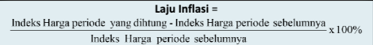

Inflasi adalah keadaan perekonomian ketika harga-harga secara umum mengalami kenaikan. Inflasi secara umum terjadi karena jumlah uang beredar lebih banyak daripada yang diperlukan. Inflasi merupakan suatu gejala ekonomi yang tidak pernah dapat dihilangkan secara tuntas. Usaha yang dilakukan biasanya hanya sampai sebatas mengurangi dan mengendalikannya
Inflasi yang disebabkan oleh kenaikan permintaan pada suatu barang/jasa. Kenaikan permintaan berasal dari peningkatan belanja pemerintah, permintaan ekspor, dan pasar domestik. Kenaikan permintaan dibandingkan dengan jumlah supply suatu barang yang tetap, mengakibatkan inflasi dari harga barang tersebut.
Inflasi seperti ini terjadi karena adanya kenaikan biaya produksi. Kenaikan biaya produksi terjadi karena kenaikan harga bahan baku, upah pekerja, dan biaya BBM (pengiriman/logistik bahan baku). Kenaikan biaya produksi mengakibatkan harga naik dan terjadilah inflasi.
Teori ini diajukan oleh kaum klasik yang mengatakan bahwa ada hubungan antara jumlah uang yang beredar dan harga-harga. Jika jumlah barang tetap, sedangkan uang beredar bertambah dua kali lipat, harga akan naik dua kali lipat yang disebabkan oleh daya beli (permintaan) masyarakat meningkat.
Inflasi dapat dihitung menggunakan rumus berikut:
Inflasi (%) = [(IHP Tahun Ini - IHP Tahun Sebelumnya) / IHP Tahun Sebelumnya] x 100%
Di mana IHP adalah Indeks Harga Produk, yang mengukur rata-rata perubahan harga barang dan jasa yang dibeli oleh konsumen.
Jika IHP tahun ini adalah 120 dan IHP tahun lalu adalah 115, maka:
Inflasi (%) = [(120 - 115) / 115] x 100% = 4.35%
